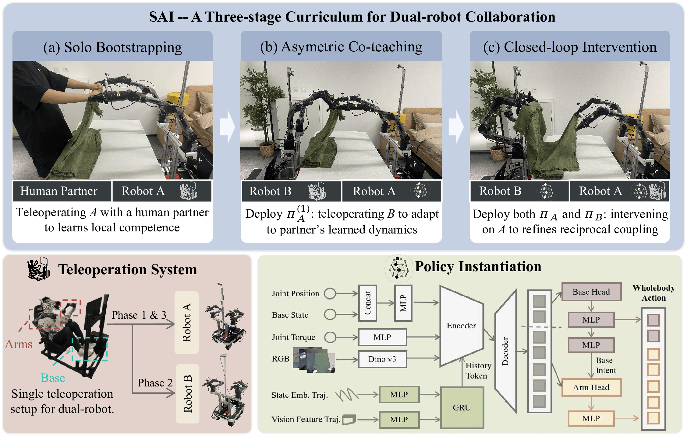
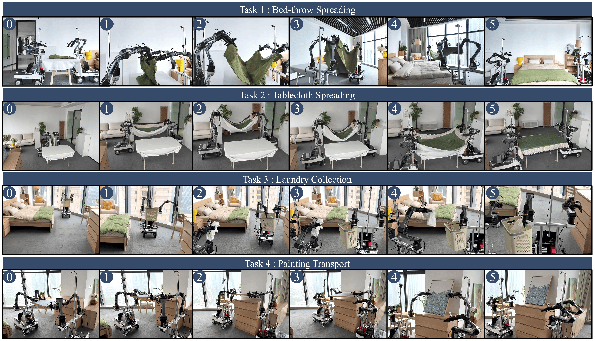

1
Temporal Phase Coupling
Robots must align grasping, pulling, lifting, transporting, lowering, and release despite variable execution timing.
Learning physically coupled dual-robot manipulation from a single-teleoperator curriculum, without synchronized dual-operator demonstrations or explicit inter-robot communication.
Independent policies can execute local primitives, but fail under phase mismatch, partner delay, and physical interaction conflict. SAI teaches coordination through the data-collection curriculum.
Collaborative manipulation fails when two individually competent robots are physically coupled through a shared object.
Robots must align grasping, pulling, lifting, transporting, lowering, and release despite variable execution timing.
A robot must slow, pause, or re-time its motion when the partner is delayed, stalled, obstructed, or out of phase.
Small timing errors can create large object deformation, internal forces, loss of grasp, or workspace conflict.
SAI decomposes dual-robot coordination into three single-teleoperator stages.

Overview of SAI. Robot A is first bootstrapped from unilateral demonstrations, Robot B is then trained against the deployed Robot-A policy, and Robot A is finally refined through sparse interventions near coordination failures.
Teleoperate Robot A with a compliant human or passive partner. Train basic task execution from unilateral demonstrations.
Freeze and deploy Robot A. Teleoperate Robot B against the learned Robot-A policy to expose B to realistic partner behavior.
Deploy both robots and sparsely correct Robot A near coordination failures, such as early pulling, insufficient yielding, or recovery errors.
SAI induces coordination by shifting the partner distribution seen during imitation: compliant support → deployed learned partner → closed-loop robot-robot interaction with targeted corrections. The policies remain decentralized and do not exchange messages, partner states, future actions, or latent embeddings.
The experiments cover deformable spreading, shared-workspace collection, and rigid-object transport.

Real-world task suite: bed-throw spreading, tablecloth spreading, laundry collection, and painting transport.
Deformable object alignment with handoff, retreat, transport, and placement phases.
Coordinated grasping and spreading under cloth tension and partner-delay perturbations.
Asynchronous shared-workspace coordination with approach, collection, and delivery.
Rigid-object cooperative transport requiring synchronized grasping, lifting, motion, and lowering.
SAI improves both task completion and process-level coupling metrics over Independent Imitation and Partner-Conditioned Imitation.
Rollout-level task completion across four real-world tasks.
Event-level phase alignment across task-specific checkpoints.
Partner-contingent slowing, waiting, and resuming behavior.
When Robot B is paused during tablecloth spreading, Independent Imitation continues pulling and destabilizes the cloth. SAI slows, waits, and resumes after the partner recovers.
SAI improves over Independent Imitation with both ACT and Diffusion Policy, indicating that the main contribution is the data curriculum rather than a specific action decoder.
We study physically coupled dual-robot manipulation with two bimanual mobile manipulators. SAI is a single-teleoperator curriculum that trains Robot A from unilateral demonstrations, trains Robot B against the deployed Robot-A policy, and refines Robot A through sparse interventions near coordination failures. Across rigid and deformable real-world tasks, SAI improves success, phase synchronization, and partner-contingent yielding.
1. A single-teleoperator curriculum for coupled dual-robot imitation learning.
2. A partner-distribution shift mechanism that induces yielding and phase alignment.
3. Real-world validation on deformable spreading, laundry collection, and painting transport.
@article{sai2026,
title = {Sequential Asymmetric Imitation for Learning Coupled Robot Policies},
author = {Yincong Chen and Ranpeng Qiu and Zihao Li and Yanan Zhou and Guoqiang Ren and Weiming Zhi},
journal = {arXiv preprint arXiv:2026.xxxxx},
year = {2026}
}